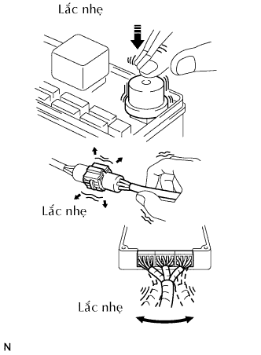
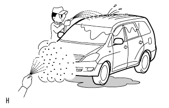
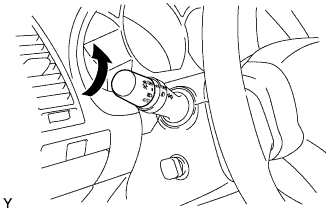

CÁCH KHẮC PHỤC HƯ HỎNG CÁC HỆ THỐNG DO ECU ĐIỀU KHIỂN > CÁCH KHẮC PHỤC HƯ HỎNG |
| QUY TRÌNH HOẠT ĐỘNG |
| 1.LÁI XE ĐẾN XƯỞNG SỬA CHỮA |
| |||||
| 2.PHÂN TÍCH HƯ HỎNG CỦA KHÁCH HÀNG |
Hãy hỏi khách hàng về các điều kiện và môi trường khi hư hỏng xảy ra.
| |||||
| 3.KIỂM TRA ĐIỆN ÁP ẮC QUY |
| |||||
| 4.XÁC NHẬN TRIỆU CHỨNG VÀ KIỂM TRA MÃ DTC (VÀ DỮ LIỆU LƯU TỨC THỜI) |
Quan sát kiểm tra dây điện, giắc nối và các cầu chì xem có hở hay ngắn mạch không v.v.
Hâm nóng động cơ đến nhiệt độ làm việc bình thường.
Xác nhận các triệu chứng và tình trạng hư hỏng, rồi kiểm tra các mã DTC.
| Kết quả | Đi đến |
| DTC phát ra | A |
| DTC không phát ra | B |
|
| ||||
| |||||
| 5.BẢNG MÃ DTC |
Kiểm tra các kết quả thu được trong bước kiểm tra DTC. Sau đó tìm DTC phát ra trong bảng mã DTC. Hãy xem cột "Khu vực hư hỏng" để biết các mạch hoặc bộ phận có thể bị hư hỏng.
|
|
| 6.BẢNG TRIỆU CHỨNG HƯ HỎNG |
Kiểm tra các kết quả thu được trong bước xác nhận lại hư hỏng. Sau đó tìm các triệu chứng hư hỏng trong bảng các triệu chứng hư hỏng. Hãy xem cột "Khu vực nghi ngờ" để biết các mạch hoặc bộ phận có thể bị hư hỏng.
| |||||
| 7.KIỂM TRA MẠCH HOẶC KIỂM TRA CÁC BỘ PHẬN |
Xác nhận lại mạch hoặc bộ phận hư hỏng.
| |||||
| 8.ĐIỀU CHỈNH, SỬA CHỮA HOẶC THAY THẾ |
Điều chỉnh, sửa chữa hay thay thế mạch hoặc chi tiết hư hỏng.
| |||||
| 9.THỬ XÁC NHẬN |
Sau khi điều chỉnh, sửa chữa hoặc thay thế, hãy xác nhận lại rằng hư hỏng đã được giải quyết chưa. Nếu hư hỏng không tái xuất hiện, tiến hành thử xác nhận lại dưới cùng một điều kiện và trong môi trường giống như khi hư hỏng xảy ra lần đầu tiên.
|
| ||||
|---|---|---|---|---|---|
| PHÂN TÍCH HƯ HỎNG CỦA KHÁCH HÀNG |
| Cái gì | Model xe, tên của hệ thống |
| Khi nào | Ngày, giờ và tần xuất xảy ra hư hỏng |
| Ở đâu | Điều kiện đường xá |
| Dưới điều kiện nào? | Điều kiện chạy động cơ, điều kiện lái xe, điều kiện thời tiết |
| Nó xảy ra như thế nào? | Các triệu chứng hư hỏng |
| XÁC NHẬN TRIỆU CHỨNG VÀ MÃ CHẨN ĐOÁN HƯ HỎNG |
| Hệ thống | Kiểm tra DTC (Chế độ thường) | Kiểm tra DTC (Chế độ kiểm tra) | Dữ liệu lưu tức thời | Chế độ kiểm tra cảm biến (Kiểm tra tín hiệu vào) | Danh sách dữ liệu | Thử kích hoạt | Tuỳ chọn thuộc tính |
| Hệ thống SFI (1TR-FE) | ○ | ○ | ○ | ○ | ○ | ||
| Hệ thống phanh chống hãm cứng | ○ | ○ | ○ | ○ | ○ | ||
| Hệ thống túi khí SRS | ○ | ○ | ○ | ○ | |||
| Hệ thống chống trộm | |||||||
| Hệ thống điều khiển khoá cửa điện | ○ | ||||||
| Hệ thống điều khiển khoá cửa từ xa | ○ | ||||||
| Hệ thống điều khiển cửa sổ điện | |||||||
| Hệ thống đồng hồ đo /đồng hồ báo | ○ | ○ | |||||
| Hệ thống nghe nhìn |
| 1.KIỂM TRA DTC |
| |||||
| 2.GHI LẠI CÁC MÃ DTC ĐÃ HIỂN THỊ VÀ SAU ĐÓ XOÁ BỘ NHỚ |
| |||||
| 3.XÁC NHẬN TRIỆU CHỨNG |
| Kết quả | Đi đến |
| Triệu chứng không còn nữa | A |
| Triệu chứng vẫn còn | B |
|
| ||||
| |||||
| 4.THỬ MÔ PHỎNG BẰNG CÁCH DÙNG PHƯƠNG PHÁP MÔ PHỎNG TRIỆU CHỨNG |
| |||||
| 5.KIỂM TRA DTC |
| Kết quả | Đi đến |
| DTC không phát ra | A |
| DTC phát ra | B |
|
| ||||
| |||||
| 6.XÁC NHẬN TRIỆU CHỨNG |
| Kết quả | Đi đến |
| Triệu chứng không còn nữa | A |
| Triệu chứng vẫn còn | B |
|
| ||||
|
| ||||
|---|---|---|---|---|---|
| MÔ PHỎNG TRIỆU CHỨNG |
|  |
PHƯƠNG PHÁP RUNG: Khi rung động có vẻ như là nguyên nhân chính
CÁC CHI TIẾT VÀ CẢM BIẾN
Lắc nhẹ bằng các ngón tay vào các chi tiết của cảm biến có thể là nguyên chân của hư hỏng và kiểm tra nếu trục trặc xảy ra.
CÁC GIẮC NỐI
Lắc nhẹ các giắc nối theo chiều thẳng đứng và ngang.
DÂY ĐIỆN
Lắc nhẹ dây điện theo chiều thẳng đứng và nằm ngang.
PHƯƠNG PHÁP NHIỆT: Khi hư hỏng có vẻ như xảy ra do nhiệt.
Sấy nóng các bộ phận mà dễ xảy ra hư hỏng bằng máy sấy tóc hay dụng cụ tương đương. Kiểm tra xem trục trặc có xảy ra không.
|  |
PHƯƠNG PHÁP PHUN NƯỚC: Khi hư hỏng có vẻ như xảy ra dưới trời mưa hay trong điều kiện độ ẩm cao.
Phun nước lên xe và kiểm tra xem trục trặc có xảy ra không.
|  |
PHƯƠNG PHÁP TẢI ĐIỆN CAO: Khi các hư hỏng có vẻ như xảy ra do quá tải về điện.
Bật quạt gió bộ sưởi ấm, các đèn pha, bộ sấy kính hậu và tất cả các phụ tải khác. Hãy kiểm tra xem trục trặc có xảy ra không.
| BẢNG MÃ CHẨN ĐOÁN HƯ HỎNG |
| Hạng mục | Mô tả |
| Số mã DTC | Chỉ ra mã DTC. |
| Hạng mục phát hiện | Chỉ ra hệ thống hoặc chi tiết của hư hỏng. |
| Khu vực nghi ngờ | Chỉ ra khu vực nghi ngờ của hư hỏng. |
| Xem trang | Chỉ ra trang ở trong quy trình kiểm tra cho từng mạch được tìm ra, hoặc đưa ra những hướng dẫn cho việc kiểm tra và sửa chữa. |
| BẢNG TRIỆU CHỨNG HƯ HỎNG |
| Hạng mục | Mô tả |
| Triệu chứng | - |
| Khu vực nghi ngờ | Chỉ ra mạch hoặc bộ phận cần kiểm tra. |
| Xem trang | Chỉ ra trang nằm trong sơ đồ khối của từng mạch |
| KIỂM TRA MẠCH ĐIỆN |
| Hạng mục | Mô tả |
| Mô tả | Vai trò chính của một mạch, nguyên lý hoạt động và các bộ phận của nó sẽ được giải thích. |
| Số DTC, Điều kiện phát hiện DTC, Khu vực nghi ngờ | Chỉ ra các mã DTC, các điều kiện phát hiện mã DTC và khu vực nghi ngờ của hư hỏng. |
| Sơ đồ mạch điện | Điều này chỉ ra mạch điện của hệ thống. Hãy dùng sơ đồ này với SƠ ĐỒ MẠCH ĐIỆN để hiểu mạch một cách đầy đủ. Các màu dây được chỉ ra bởi các mã chữ cái
|
| Quy trình kiểm tra | Hãy dùng quy trình kiểm tra để xác định xem mạch có bình thường hay không. Nếu là không bình thường, thì dùng quy trình kiểm tra để xác định xem hư hỏng là nằm ở các cảm biến, bộ chấp hành, dây điện hay ECU. |
| Chỉ ra tình trạng của giắc nối của ECU trong khi kiểm tra. | Giắc đang kiểm tra đã được nối: Nối máy với các dấu (+) hay (-) sau tên cực. Giắc đang kiểm tra đã được ngắt ra: Hình vẽ của việc kiểm tra giữa một giắc nối và mát thân xe, các thông tin về mát thân xe sẽ không được chỉ ra trên hình vẽ. |